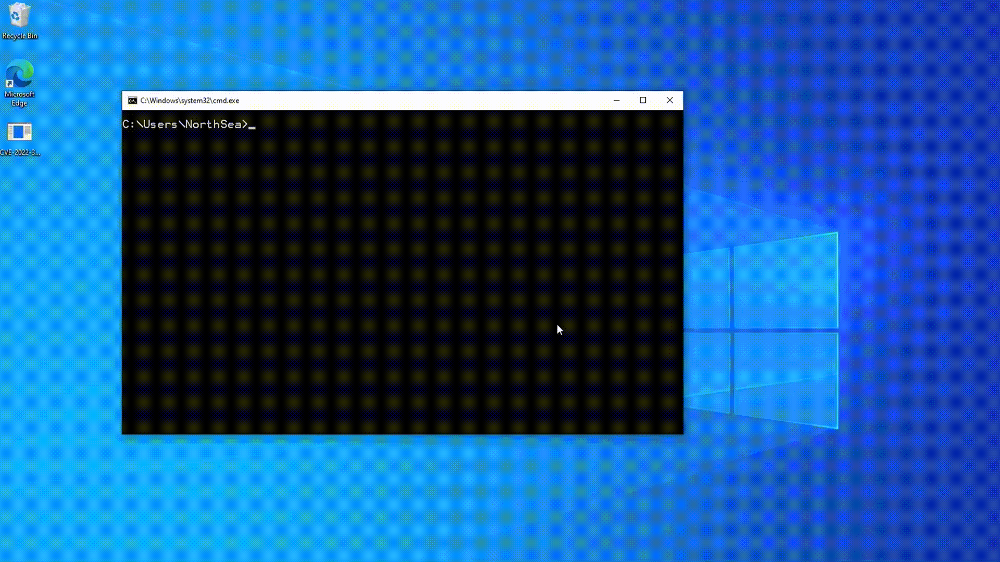

Author: @luckyu
Overview
In Windows, the Common Log File System (CLFS) is a general-purpose logging service that can be used by software clients running in user-mode or kernel-mode. The Common Log File System (CLFS) is implemented in Windows Kernel through clfs.sys. Due to parsing the file directly through the driver and the complexity of the log file structure itself, there are many security issues found in clfs.sys over the years, which become a common attack surface in Windows Kernel.
Earlier this year, I analyzed some past vulnerabilities in clfs.sys, and saw a sample of a in-the-wild vulnerability (CVE-2022-24481) fixed this year. Through the research on the sample and the patch for this vulnerability, I found that the patch of Microsoft for it was incomplete, then I bypassed the patch by a type confusion issue. Through some tricks of exploit, I completed the EoP on Windows Kernel in May, and planned to use this vulnerability in the competition in the second half of this year. However, due to the cancel of the competition and other reasons, this vulnerability has been shelved until it was disclosed in September 2022 Patch Tuesday(Duplicated).
Now, I will analyze this vulnerability and show how to exploit this type confusion issue to achieve escalation of privilege on Windows Kernel.
Old Bug: Analysis of CVE-2022-24481
There is a key structure in CLFS named _CLFS_BASE_RECORD_HEADER used to represent the base record header:
typedef struct _CLFS_BASE_RECORD_HEADER |
The rgClients and rgContainers fields in the structure are used to represent a 32-bit array that stores the offsets of each client context and container context. A user can modify them on the disk. The root cause of the vulnerability is the lack of effective verification for the client offset, so that it can overlap with the container context. As a result, the modification of the client context caused by CLFS.sys will change the next container context at the same time.
The in-the-wild sample will trigger the function CClfsLogFcbPhysical::FlushMetadata when the log file is closed:
__int64 __fastcall CClfsLogFcbPhysical::FlushMetadata(__int64 CClfsLogFcbPhy) |
The CClfsLogFcbPhy variable pointer named in the above code is a CClfsLogFcbPhysical object, initialized in the CClfsLogFcbPhysical::Initialize function, which will be called when the log file is opened:
__int64 __fastcall CClfsLogFcbPhysical::Initialize() |
In the crafted CLFS log file, the attacker overlaps the llCreateTime field of client context with the pContainer field of container context, and sets the llCreateTime field to a address in userspace. After calling the function CClfsLogFcbPhysical::FlushMetadata, the pContainer field of container context(which stores a kernel pointer to the CClfsContainer object at runtime) will be modified.
After FlushMetadata ends, the clfs.sys will call the function CClfsLogFcbPhysical::CloseContainers to close containers:
__int64 __fastcall CClfsLogFcbPhysical::CloseContainers(__int64 ClfsLogFcbPhyObj) |
After [1], the pContainer will point to an attacker-controlled memory space(in user space). When calling CClfsContainer::Close[2], the function ObfDereferenceObject will be triggered internally. This will lead to an arbitrary address decrement. This trick is used by the in-the-wild sample to reduce PreviousMode to zero, which will cause the calling thread to be set from user-mode to kernel-mode, and finally enable the user to read/write arbitrary address in kernel space through NtWriteVirtualMemory/NtReadVirtualMemory. After that, the user can achieve escalation of privilege by overwriting the token field in the _EPROCESS object of current process to the address(the sample gets these addresses through NtQuerySystemInformation) of the token in _EPROCESS object of System process.
Patch of CVE-2022-24481
Through analysis of diff, it can be seen that the patch for vulnerability is to add a check for the offset of rgClients and rgContainers in CClfsBaseFile::ValidateRgOffsets:
__int64 __fastcall CClfsBaseFile::ValidateRgOffsets(CClfsBaseFile *this, unsigned int *rgObject) |
An important check is introduced at [3] by the patch. It requires that the interval between container context and the next context should be at least 0x30+12*4 = 0x60 bytes, and the interval between client context and the next context should be at least 0x30+34*4 = 0x88 = 0xb8 bytes. However, In the function CClfsLogFcbPhysical::FlushMetadata, we can only modify the field at offset 0x78 bytes(ClfsClientContext->eState) at most. Therefore, the vulnerability was fixed by the added check.
How to Bypass
Through the analysis of the Patch, we can see that the fault of directly modifying the offset of client context has been fixed. But is there another way to overlap fields and lead to vulnerability?
Through research, I found that during the period from ValidateRgOffsets verifying offset to FlushMetadata modifying data, and from that to CloseContainers closing the container, there is no check for the validity of the field cidNode.cType(represents the type of context) of client context. This may lead to a type confusion issue: if we set the cidNode.cType of client context to 0xC1FDF008, the interval of the client context and the next context will be limited incorrectly to 0x60 bytes when ValidateRgOffsets calculates it, which will cause the fields of the client context at the offset of 0x60~0x88 bytes to overlap with the fields of the next context at the offset of 0~0x28 bytes. ==> A new vulnerability has occurred.
I reviewed CClfsLogFcbPhysical::FlushMetadata again and determined that the pContainer in the next container context can be modified by ClfsClientContext->eState.
Since the original pContainer is aligned with 0x10 bytes, this will make the pContainer field point to the location of 8 bytes offset of original Container object, which exactly stores the size of the Container file, which is specified through the parameter pcbContainer when user calls function AddLogContainer:
https://learn.microsoft.com/en-us/windows/win32/api/clfsw32/nf-clfsw32-addlogcontainer :
[in, optional] pcbContainer |
Therefore, when the data is considered as an address, it can be located in the user space. This vulnerability can be exploited by faking a virtual function table of the container object in the user space!
Before:
After:
Let’s Exploit It
Next, I will show how to exploit this type confusion issue and achieve Escalation of Privilege.
In the analysis of the patch above, we know that when the type confusion issue occurs in the client context, we can modify the eState field with FlushMetadata to change pContainer field of the next container context, but this method needs to meet the following conditions:
__int64 __fastcall CClfsLogFcbPhysical::FlushMetadata(__int64 CClfsLogFcbPhy) |
The check at [4] needs to be false. ⇒ (*(ClfsLogFcbPhyObj + 0x15C) & 0x10) ≠ 0
About *(ClfsLogFcbPhyObj + 0x15C) :
A flag field is stored in *(ClfsLogFcbPhyObj + 0x15C), which determines whether ClfsClientContext->eState will be modified. This condition cannot be passed under normal operations(CreateLogFile && CloseHandle). In order to modify this field, we need to understand the meaning of field eState first. By Docs:
typedef UCHAR CLFS_LOG_STATE, *PCLFS_LOG_STATE; |
From the definition, it seems like that the log file is ready to be deleted when the value is 0x08[5]. So I focused on reversing and debugging the closing operations of client, tried to find the operation of the CLFS_LOG_PENDING_DELETE flag. I soon noticed some key operations in CClfsLogFcbCommon::DeleteLog:
__int64 __fastcall CClfsLogFcbCommon::DeleteLog( |
Through the DeleteLogFile API, I successfully triggered the function and completed the modification of *(ClfsLogFcbPhyObj + 0x15C) [6].
Now, let’s make a fake client context:
Firstly, I modify the offset of client context to ensure that the eState field of client context overlaps with the pContainer of container context, and set the cidNode.cType of client context to 0xC1FDF008. The cidClient corresponds to the index of rgClients. In addition, I modify the related fields of CLFSHASHSYM in front of the client context, because there is a verification for the fields of CLFSHASHSYM in CClfsBaseFile::GetSymbol:
__int64 __fastcall CClfsBaseFile::GetSymbol(CClfsBaseFile *this,unsigned int ClientContextOffset,char ClientContextId,struct _CLFS_CLIENT_CONTEXT **a4) |
CLFSHASHSYM is located above the context and offset by 0x30 bytes, and its offset is also stored in _CLFS_BASE_RECORD_HEADER (the fields rgClientSymTbl and rgContainerSymTbl), which are defined as:
typedef struct _CLFSHASHSYM |
I need to set the cbOffset field to a value equal to the ClientContextOffset[7], and the cbSymName field to a value equal to the ClientContextOffset + 0x88 [8] (the string where the client name is stored).
At this point, I initially construct the fake client context, and try to open the fake CLFS log file. I successfully bypass the patch in ValidateRgOffsets, and call the DeleteLogFile to expect the result. Unfortunately, the pContainer wasn’t modified successfully. I set a breakpoint in FlushMetadata. Then I found that the lsnLast field of client context overlaps with the fields CLFSHASHSYM.cbSymName and CLFSHASHSYM.cbOffset above the container. Therefore, when the initialized (ClfsLogFcbPhyObj + 0x1E8) field is modified, the CLFSHASHSYM is also modified:
ClfsClientContext_1->lsnLast.ullOffset = *(ClfsLogFcbPhyObj + 0x1E8); |
This will make the container context fails the check of GetSymbol. I start to analyze how *(ClfsLogFcbPhyObj + 0x1E8) is modified:
The type of lsnLast is CLS_LSN, which is defined as:
typedef struct _CLS_LSN { |
In order to find out how CLFS_LSN was modified, I set a hardware breakpoint at the address of *(ClfsLogFcbPhyObj + 0x1E8) after CClfsLogFcbPhysical::Initialize initializes ClfsLogFcbPhyObj, the breakpoint is triggered in CLFS!CClfsLogFcbPhysical::UpdateCachedOwnerPage. Through reversing, I found that the value of CLFS_LSN is calculated when CClfsLogFcbPhysical::AddLsnOffset is called for the first time in UpdateCachedOwnerPage:
union _CLS_LSN __fastcall CClfsLogFcbPhysical::AddLsnOffset(CClfsLogFcbPhysical *this,const union _CLS_LSN *a2,_DWORD *lsnOwnerPage_low32,unsigned int a4) |
To sum up, when the low 32 bits of lsnOwnerPage are not equal to CLFS_LSN_INVALID.ullOffset, the new ullOffset value is calculated from the lsnOwnerPage field of client context:
- The low 32 bits of the ullOffset =
(ContainerSize * lsnOwnerPage_high32 + (lsnOwnerPage_low32 & 0xFFFFFE00) +0x1000) % ContainerSize - The high 32 bits of the ullOffset =
(ContainerSize * lsnOwnerPage_high32 + (lsnOwnerPage_low32 & 0xFFFFFE00) +0x1000) / ContainerSize
To protect CLFSHASHSYM from being corrupted, we need to:
- Set the low 32 bits of the ullOffset == ContainerContextOffset + 0x30
- Set the high 32 bits of ullOffset == ContainerContextOffset.
An additional consideration is that since the low 32 bits of the ullOffset will perform 0x200 bytes alignment, this requires the original cbSymName, which is ContainerContextOffset + 0x30, to be aligned with 0x200 bytes. Here we can choose to create multiple clients/containers to construct a satisfying offset, or directly make a container to satisfy this condition.
After modifying the data, trigger FlushMetadata again, and the pContainer field has been modified successfully:
rax=00000000000000f8 rbx=ffffb58d7569d000 rcx=00000000000000f8 |
Then the program runs to CClfsBaseFilePersisted::RemoveContainer, which calls the vtable function of Container object:
__int64 __fastcall CClfsBaseFilePersisted::RemoveContainer(CClfsBaseFilePersisted *this, unsigned int a2) |
The assembly code used to call virtual table functions is:
mov rax, [rdi] <<-------- 9 |
The rax register will point to the wrong virtual function table after the [9] code is executed, and this field actually stores the file size of the Container.
CLFS!CClfsBaseFilePersisted::RemoveContainer+0x142: |
When the virtual function is called, the first parameter(stored in the register rcx) is the Container object + 8, which limits the function we used to achieve EoP:
1: kd> r |
I start looking for a magic gadget in the driver space, it’s just like a CTF Challenge!
Through that, I found an interesting piece of code in CLFS!CClfsLogFcbPhysical::GetContainerForLsn:
__int64 __fastcall CClfsLogFcbPhysical::GetContainerForLsn(CClfsLogFcbPhysical *this,struct CClfsContainer **a2,unsigned int *a3,const union _CLS_LSN *a4) |
This function gets a function pointer and its first parameter from the dereference of the second parameter, then calls it[10].
So if I can assign rcx to rdx before calling this function, I can complete a function call with a controllable parameter.
To assign rcx to rdx, I found a gadget in nt!FsRtlPrivateResetLowestLockOffset:
FsRtlPrivateResetLowestLockOffset+28 mov rdx, rcx |
This gadget requires r8 to be a writable address, and this restriction happens to be satisfied when the program trigger it. After controlling the parameter, I choose to use another magic function in GetContainerForLsn: nt!XmXchgOp, it can obtain an arbitrary address write primitive by controlling the variable saved by rcx:
XmXchgOp XmXchgOp proc near ; CODE XREF: XmEmulateStream+10E↓p |
After that, there are many ways to achieve escalation of privilege. You can set the PreviousMode of the current thread to zero by arbitrary address write primitive and use the trick analyzed previously of the in-the-wild sample to achieve escalation of privilege.
Exploit

Patch for CVE-2022-35803
Microsoft patches the vulnerability by adding a check on the cType field of context in CClfsBaseFile::GetSymbol to prevent the type confusion issue in September 2022 Patch Tuesday.
__int64 __fastcall CClfsBaseFile::GetSymbol( |